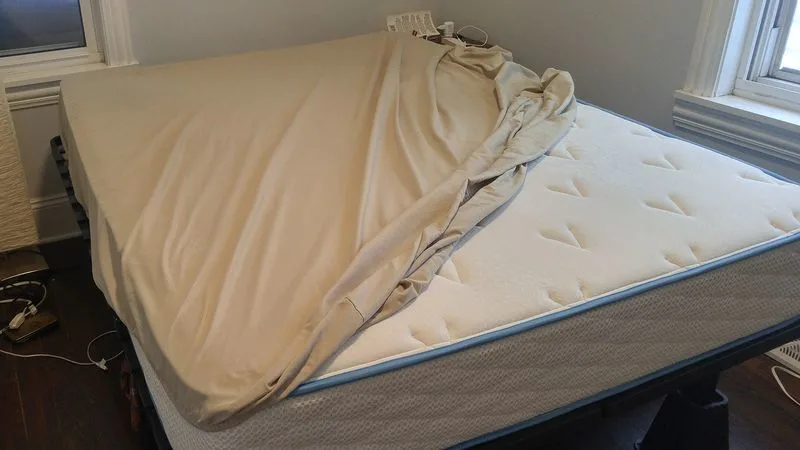
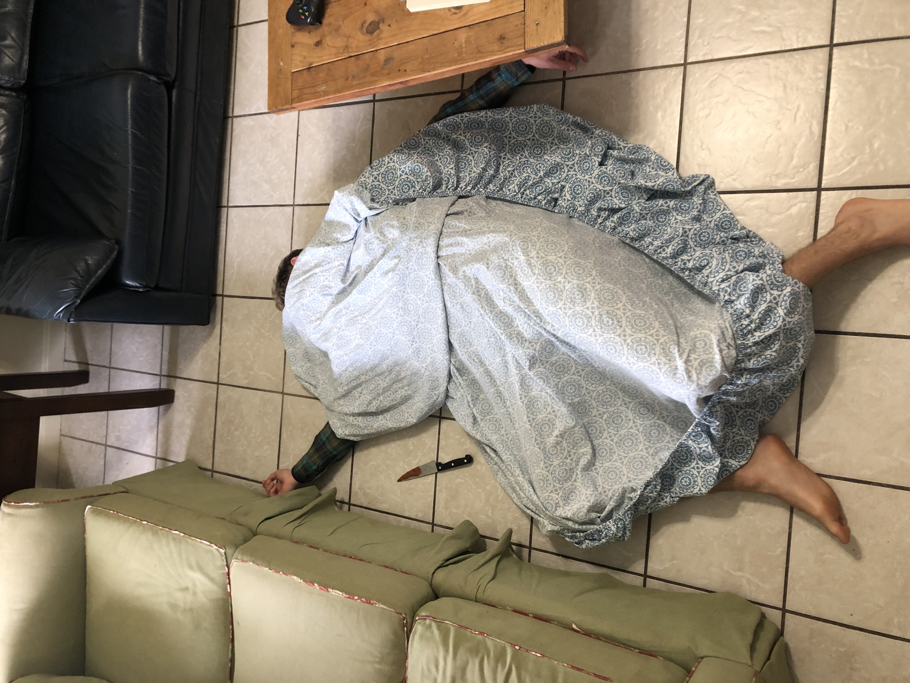

Abolish Fitted Sheets
What’s so special about fitted sheets. Why do they need to be fitted? Why is it that when they bunch up, they form a circle, when beds are rectangular? Why are they always just a little bit too small? There’s only one possible explanation: fitted sheets have been introduced to humanity aliens who are planning to use their frustrating properties to destabilize our society. We need to act quickly; we must abolish fitted sheets before it’s too late.
About the Enemy
Fitted sheets were invented on October 6, 1959 by Bertha Berman. While not confirmed, it is highly likely that Bertha Berman was an alien in disguise. Aliens are known for their weak creativity skills, and they struggle with human naming conventions - they often have first and last names that share several letters.
A fitted sheet is described as a sheet tailored to form a pocket for a mattress with elastic edges that is suitable for a range of mattress sizes. The edge may also contain a drawstring to secure the sheet more firmly and enable use on a wider range of mattress thickness. Fitted sheets come in different materials, including cotton, linen, flannel, t-shirt fabric and satin. Fitted sheets also come in different styles to fit different types of mattresses.
The fitted sheet’s core purpose, according to its patent, is to protect a mattress from getting dirty by creating a separable layer that can be laundered more easily. They seem innocent enough, but don’t let it fool you - fitted sheets were planted here to corrupt the minds of our children, and commit crimes against humanity. We will show you how dangerous they are, and what we can do to resist.
How Fitted Sheets Commit War Crimes
Fitted sheets are frequently involved in violent actions.
Murderers use fitted sheets to hide the bodies of their victims
Fitted sheets cause thousands of deaths yearly by tricking people into thinking they're parachutes

Additionally, fitted sheets...
- Lorem, ipsum.
- Lorem, ipsum dolor.
Fitted Sheet Alternatives
Clearly, fitted sheets are dangerous, but worst of all, they’ve become deeply integrated into our society. Just like parasites that evolve to form a symbiotic relationship with their hosts, fitted sheets have wormed their way into our culture, and have formed a chokehold with parasitic elastic. In order to rid ourselves of fitted sheets, we need to find alternatives for the function we’ve become so dependent on. Fortunately, there are dozens of things that aren’t fitted sheets that could easily serve the purpose of fitted sheets. For instance:
- Post it notes
- Sheet of metal
- Spaghetti
- Spaghetti sauce
- Dirt
- Sleep in a cave
- Light your bed on fire every night to cleanse it of sin
- Magnetic sheet
- Sleep in a hammock
- Waterbed underwater so it’s always clean
- Just sleep on a dirty mattress it’s probably not that bad
- Sleep on the floor
- Put a carpet on your bed
- Sleep in the bathtub
- Cover yourself in soap every night before you go sleep so that you constantly clean the mattress at night
- Sleep upside down like a bat
- Levitate off the bed so it doesn’t get dirty
- Sleep underneath the mattress
- Use an enormous pillowcase for your entire mattress
- Put a second mattress on top of your first mattress so when it gets dirty you can just replace the top mattress
- Sleep in a sleeping bag on your bed
- Sleep in a sleeping bag outside
- Sleep in a sleeping bag in a pile of other sleeping bags